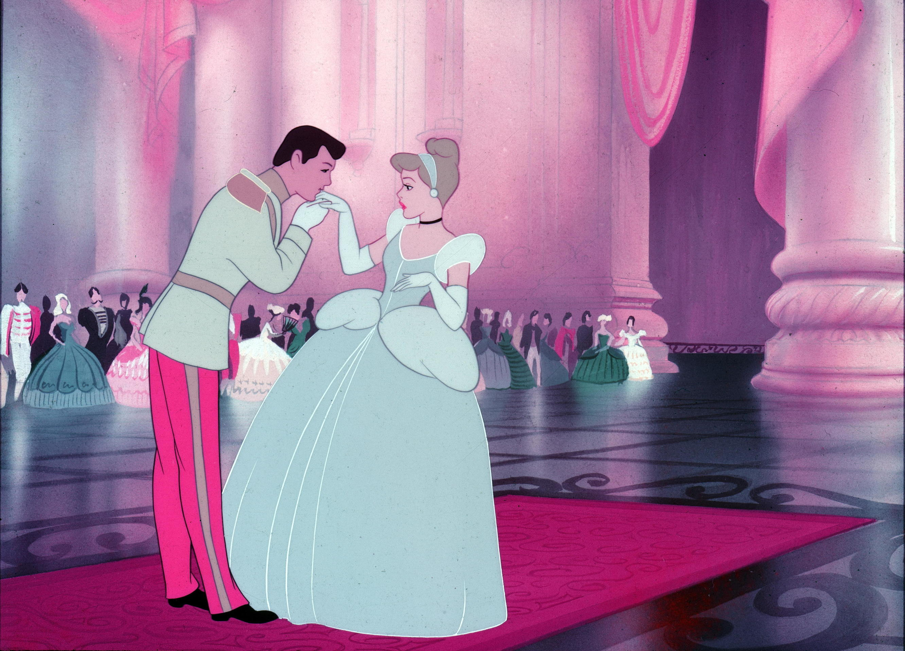

Assepoester (originele titel Cinderella) is een Amerikaanse animatiefilm van Walt Disney, die op 15 februari 1950 in première ging. Het was Disneys twaalfde lange animatiefilm. Tevens was het de eerste Disney-animatiefilm sinds een aantal jaar die weer uit één lang verhaal bestond. De vorige zes films waren allemaal opgebouwd uit twee of meer kortere verhalen. Het verhaal van de film is gebaseerd op het gelijknamige sprookje zoals dat in de 17e eeuw werd opgetekend door Charles Perrault. Van het sprookje zelf bestaan meerdere bekende versies, maar Disney gebruikte alleen die van Perrault.
De vader van het jonge meisje Assepoester is een weduwnaar, die is hertrouwd omdat hij zijn dochter graag een nieuwe moeder wilde geven. Zijn tweede vrouw, van wie in de film enkel de achternaam bekend wordt (Tremaine), had zelf ook al twee dochters, Anastasia en Drizella. Korte tijd na het huwelijk overlijdt de vader van Assepoester, waarna haar stiefmoeder in werkelijkheid een erg gemene en jaloerse vrouw blijkt. Zij en haar dochters dwingen Assepoester om hun dienstmeid te worden. Bij alle huishoudelijke klusjes die ze moet doen krijgt Assepoester hulp van een groep muizen die in het huis wonen. Assepoester beschermt in ruil de muizen tegen de wrede kat Lucifer. Op een dag bevrijdt ze een nieuwe muis, Pieter (Gus), uit een val die door Assepoesters stiefmoeder is gezet.
n het koninklijk paleis zit ondertussen de koning van het land met zijn eigen problemen. Hij wil graag dat zijn zoon in het huwelijk treedt en een gezin sticht. De prins komt die dag weer thuis en dus besluit de koning deze gelegenheid aan te grijpen om een bal te organiseren waarbij tevens alle jonge, ongehuwde meisjes uit zijn rijk zijn uitgenodigd. Hij hoopt dat de prins zo de vrouw van zijn dromen zal ontmoeten. Assepoester en haar stieffamilie krijgen ook een uitnodiging, maar mevrouw Tremaine wil Assepoester niet laten gaan. Ze zorgt ervoor dat Assepoester door haar werk niet toekomt aan het maken van een geschikte jurk voor het bal. De muizen proberen haar te helpen door zelf een jurk voor haar te maken, maar Anastasia en Drizella verscheuren deze vlak voordat ze naar het bal gaan.
Dan krijgt Assepoester hulp uit onverwachte hoek: een goede fee tovert voor haar een baljurk met glazen muiltjes. Tevens verandert ze een pompoen in een koets en de muizen in paarden. Assepoester gaat naar het bal, alwaar ze al snel de aandacht van de prins trekt. Ze charmeert de prins uitermate, doch niemand herkent Assepoester. Om middernacht wordt de betovering verbroken en moet ze noodgedwongen het paleis ontvluchten. Bij haar vlucht verliest ze een van de muiltjes.
De prins vindt het muiltje en zweert dat hij haar zal vinden zodat hij met haar kan trouwen. De koning geeft de hertog de opdracht om alle meisjes in het land dit muiltje te laten passen om zo de identiteit van de geliefde van de prins te achterhalen. Wanneer de hertog het huis van Assepoester bezoekt, sluit mevrouw Tremaine Assepoester op in haar kamer. Terwijl zij en haar dochters tevergeefs proberen het muiltje te passen, stelen de muizen de sleutel van de deur en bevrijden Assepoester. Ze komt net op tijd beneden om het muiltje ook te passen. Even lijkt het nog mis te gaan wanneer, door toedoen van mevrouw Tremaine, het muiltje breekt, maar dan onthult Assepoester dat ze het andere muiltje nog bij zich heeft.